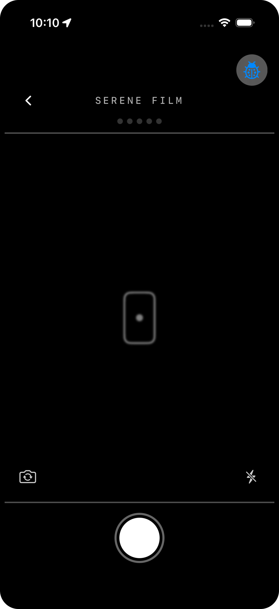
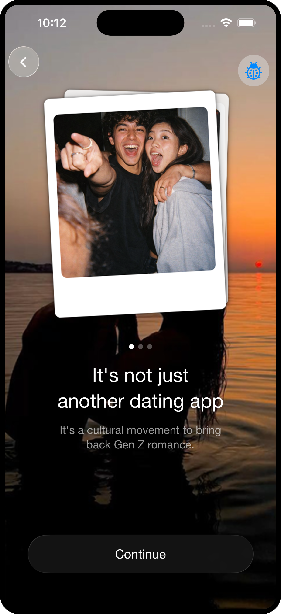

The User
Why Serene?
Have you tried dating apps where you match with someone, text for a while, and then never actually meet? Have you spent more time swiping and looking at profiles than connecting with someone in real life? A lot of apps feel like work: endless swiping, chats that lose momentum, and pressure to overthink your profile, when meeting in person is what actually matters to you.
The app is aimed at college students who want to meet and date in real life without getting stuck in endless swiping and messaging. For you, that means a lighter digital layer and more room for in-person interaction instead of living in the chat thread.
The gallery below shows three moments in onboarding when you take your first photo in a Polaroid-style flow so your profile feels more real and less curated than a typical polished headshot.
Figure 1. Polaroid onboarding capture (three screens).



How Serene Works
The steps stay pretty simple from the first time you open the app. Here is the basic flow:
- You create a profile and set your preferences and availability.
- You turn on location-based discovery and notifications.
- You swipe on real profiles. Matches stay low-key until there is mutual interest.
- When a match is nearby, you get notified.
- You decide whether you want to meet in real life.
Use the previous and next controls below to step through the meet flow in order, from the nearby match notification through map guidance and check-in.
Figure 2. Meet flow from nearby match notification to real-life meetup (seven screens).
What Makes Serene Different
You might think of it as the art of serendipity: things can feel more natural when they are not totally planned out from the first swipe. The idea is to give you a clearer story about where you met—more like bumping into someone at a supermarket, a park, or the school library than doing everything from the couch. It is still a dating app, but the emphasis is on real life instead of keeping you in the feed.